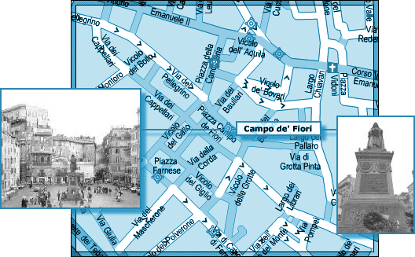
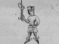

L'ICPA est une association privée créée par des amis et des collègues du journaliste Jack Lorski au lendemain de l'annonce de son meurtre en Écosse. Son seul but est d'aider les services de police et de justice internationaux à mettre fin le plus tôt possible aux agissements criminels du Phoenix.
SKL NETWORK est l'agence qui employait Jack Lorski. Elle a reçu et rendu public les deux CD-Roms envoyés par le Phoenix.
LIBERATION.FR a publié plusieurs articles sur l'affaire du Phoenix. Utilisez son moteur de recherches pour accéder à ses archives.
VICTIME N°12 : GUIDO CORLIANO
- IDENTITÉ
Guido Corliano est né le 12 août 1958 à Naples. Son véritable patronyme est Forlino.
Après avoir abandonné une carrière ecclésiastique qui s'annonçait pourtant brillante, il est devenu très vite l'un des plus grands spécialistes mondiaux des langues anciennes (latin, grec, copte, etc.). Dans les années 80, il a parcouru le monde pour donner de nombreuses conférences sur les débuts du christianisme.
Au cours de son mandat à la tête de Manus Domini en Europe, il n'a cessé de prêcher un retour aux vraies valeurs du catholicisme. Il a soutenu (et même créé) de nombreuses associations caritatives ou religieuses qui défendaient les mêmes idées, notamment celles de l'abbé Malard et de Markus Hermann.
- PHOTO
- DATE ET LIEU DU CRIME
Guido Corliano a été tué à Rome, le 17 février 2003. Son corps a été déposé le même jour sur la Piazza Campo de Fiori. - AUTOPSIE
Guido Corliano a été poignardé. D'après les analyses effectuées et les blessures constatées, il a subi auparavant plusieurs jours d'interrogatoire particulièrement cruel. - ANALYSE
Guido Corliano est la douzième victime connue du Phoenix. Le tueur l'a choisi parce qu'il était membre de Manus Domini, condition sine qua non de sa vengeance contre cette société secrète, mais surtout parce qu'il en était le responsable pour l'Europe.
En faisant mourir Guido Corliano le même jour que Giordano Bruno, le Phoenix souligne le lien direct qui existe entre l'actuel Manus Domini et l'ancienne Inquisition. En déposant son corps là même où pérît le philosophe italien, le Phoenix clôt son rituel lié au parcours européen de son maître à penser. En effet, c'est à Rome, sur le Campo dei Fiori, que Giordano Bruno a été brûlé vif, le 17 février 1600, après huit longues années de détention dans les geôles inquisitoriales.
Toujours en référence à son maître, le Phoenix a signé son crime en associant Guido Corliano à Mercurius (Mercure), le quatrième principe élémentaire de la magie brunienne (De imaginum idearum compositione, 1591) :Vient ensuite la forme visible du plus énergique de tous les dieux, le héraut, le messager, le juge. Il est l'effigie au visage noir d'un côté et blanc de l'autre ; et en jeune homme, des ailettes aux pieds, coiffé d'un chapeau, tenant dans la main droite une baguette entourée de deux serpents entrelacés, il présente la couronne des âmes mortes à Charon. - COMMENTAIRES DU PHOENIX
• « J'ai déposé son corps sur le Campo dei Fiori en offrande à mon maître. »
• « En vengeant Volker, je vengeais mon maître
En refaisant son itinéraire quatre siècles plus tard
En m'en prenant aux mêmes ennemis…
Mon ¼uvre est semblable au codex 14
Mais inversée
Avant de disparaitre, le livre maudit a entraîné la mort de plusieurs personnes dont Volker
Pour apparaître, mon ¼uvre a entrainé la mort de plusieurs personnes dont GC. »
• « Le 17 février 2003, Guido Forlino dit Guido Corliano fut ma dernière victime.
Responsable de Manus Domini, il a payé comme les autres.
Il a payé pour ses prédécesseurs.
Ceux qui ont ordonné l'exécution de Volker.
En hommage à mon maître, j'ai laissé son cadavre sur la Campo Dei Fiori.
Mais avant de mourir, Guido m'a donné une information capitale.
Je connais maintenant le lieu où le Livre maudit est conservé.
Je sais maintenant qui détient l'ouvrage.
Et qui protège Manus Domini.
Et ma vengeance ne fait que commencer… »
• « Avant de mourir Guido Corliano, le dirigeant de Manus Domini,
M'a donné les informations qui vont me permettre de retrouver
Le Livre. » - DOCUMENT
• E-mail d'Aline Kunfter, directrice du Nouvel Observatoire Universitaire des Sectes
« Suite aux nombreuses demandes qui m'ont été adressées, voici quelques informations concernant Manus Domini. Pendant l'été 2003, j'ai eu l'occasion de me rendre à Marburg pour un colloque sur les sectes en Allemagne où j'ai eu l'occasion de rencontrer quelques anciens adeptes de cette organisation. Ces témoignages nous ont confirmé le caractère sectaire de cette organisation et sa dangerosité. En voici un extrait : J'ai participé à de nombreuses réunions de Manus Domini pendant près de 2 ans. Au départ je cherchais de nouveaux repères par rapport à mon engagement religieux et cette organisation semblait correspondre à ce que je recherchais à l'époque : en gros un retour vers la tradition de l'Eglise aujourd'hui sujette à de trop nombreuses tentations libérales. Je me suis vite rendu compte qu'il y régnait un véritable culte du secret et surtout un culte de la personnalité autour de son dirigeant Guido Corliano dont le nom véritable est Guido Forlino. »
- LIEN
• Site d'Alonzo Paoli, admirateur de Guido Corliano